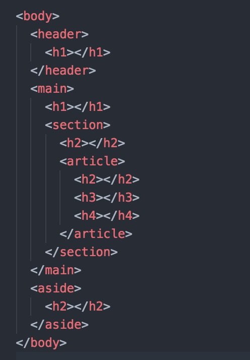
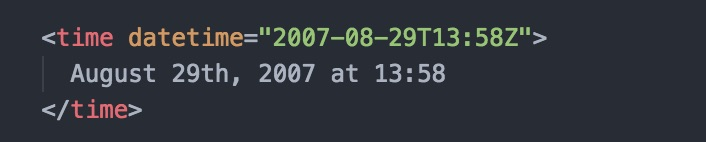
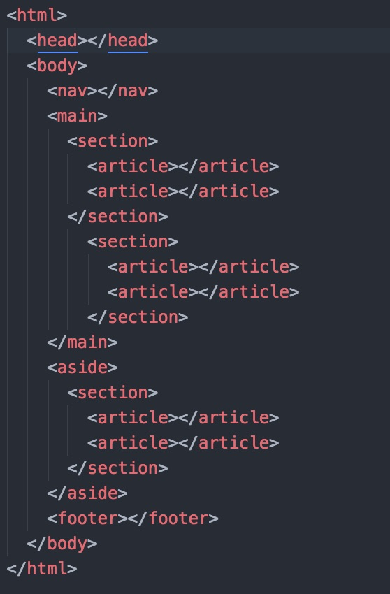
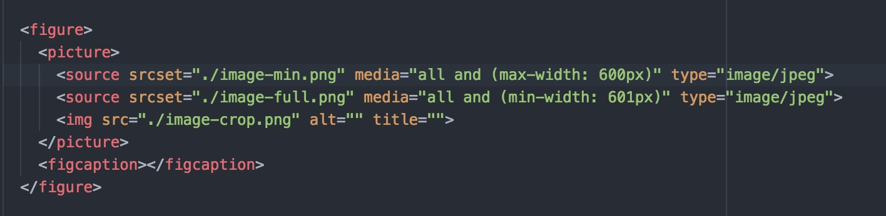

SEO
Audience / Visibitilé / Référemcement
Nicolas Fazio
@FazioNico
PRÉSENTATION DE LA FORMATION
> voir le programme de la formation1: Introduction au SEO
Contexte, enjeux, historique, On-Site & Off-Site SEO
Jour 1
1.1: Contexte, enjeux
Le référencement, ou l'optimisation des moteurs de recherche (SEO en anglais), est désormais primordial pour toutes les entreprises, associations, collectivité etc….
Il s’agit d’un processus de configuration et d'optimisation de votre site afin qu'il soit facilement trouvé et des moteurs de recherche comme Google, Yahoo et Bing.
1.1: Contexte, enjeux
La plupart des gens, aujourd'hui, ne vont pas chercher un annuaire téléphonique quand ils ont besoin de quelque chose. Au lieu de cela, ils vont en ligne pour la rechercher. Si votre entreprise ne s'affiche pas dans les résultats de recherche, vous perdrez presque certainement des affaires précieuses.
Les entreprises se rendent compte qu'ils devraient avoir un site Web, mais simplement avoir un site Web n'est que la première étape et ne garantit pas que vous recevrez un trafic de visiteurs important. Construire un site Web efficace qui fournira un flux de prospects solide ou cohérent ou des ventes nécessite quelques connaissances.
1.2: Bref historique
Dans le monde du SEO, les choses changent constamment.
Les professionnels du référencement doivent être sur leurs gardes 24 heures sur 24, 7 jours sur 7, toujours en train de regarder, d'écouter, de lire et de se préparer aux changements potentiels qui pourraient survenir.
En effet, le classement d’un site dans les moteur de recherche est entièrement dépendant des algorithmes d'indexation de Google et est donc susceptible de changer.
Ces algorithmes analyse l’intégralité du web et classe selon des critères très précis et bien entendu très secret, les site internet pour proposer une liste de résultat cohérent.
1.2: Bref historique
Au début de Google en 1998, c’était l’époque du western. Tout étais permis et n’importe quoi fonctionnait. Bien entendu Google à dut revoir ces algorithmes pour proposer des résultats de recherche plus pertinent au utilisateurs.
La dernière décennie a été un vrais cataclysme pour les professionnels du référencement, car l’ajout de nouveaux algorithmes, Panda, Penguin, Hummingbird, Pigeon, BrainRank, Phantom, Fred à drastiquement changer la donne et les pratiques autorisée pour référencer un site web.
Une grande quantité de site ne sont plus visible dans les moteurs de recherche, même certaine type de site n’apparaisse plus (annuaire de référencement).
Désormais, les choses se sont finalement stabilisées mais il est encore important de passer du temps pour suivre les changements.
1.3: On-Site SEO
Le référencement est divisé en deux catégories principales:
- sur site (onsite)
- hors site (offsite)
Le On-site se compose des éléments qui existent sur votre site Web et dans le code HTML de votre site Web, sur lequel vous avez le contrôle.
1.3: On-Site SEO
Voici les trois principales choses qui composent le SEO onsite:
- la structure
- la sémantique
- le contenu
1.4: Off-Site SEO
Une fois que votre site Web est structuré et codé correctement et contient un contenu excellent, il est temps de développer et d'exécuter une solide stratégie de référencement hors site.
Le Off-site se compose de facteurs qui influent sur votre classement des moteurs de recherche qui ne se trouvent pas sur votre site Web.
1.4: Off-Site SEO
Voici un regard rapide sur les principaux facteurs du référencement hors site:
- Liens entrant et mention de la marque
- L’engagement sur les média sociaux
- Les commentaire et avis utilisateur
2: On-site | Conception du site
2.1: Les facteurs structurels d’experience utilisateur qui affectent les classements de recherche
Jour 1 (suite)
2.1.a: Vitesse de chargement
La vitesse du site ne va pas faire ou briser la visibilité de votre recherche, mais c'est un facteur très important à optimiser. La vitesse de chargement de votre page joue un rôle primordial dans la mesure où un utilisateur se sent satisfait de son résultat de recherche choisi, de sorte que Google le prend au sérieux.
Étant donné que la majorité des recherches sont maintenant effectuées sur les appareils mobiles, la vitesse du site est encore plus importante; Les appareils mobiles ont tendance à être plus lents que leurs homologues de bureau, donc chaque seconde compte.
2.1.a: Vitesse de chargement
Prenez le temps de nettoyer régulièrement votre site et d'exécuter des tests de vitesse pour vous assurer que rien n'interfère avec vos temps de chargement.
Installez un bon plugin de mise en cache, assurez-vous que votre hébergement est en ordre, supprimez les anciens projets ou images inutilisés et comprimez les images que vous avez à prendre autant d'espace que possible.
Compresser les images, les ressources CSS et JS, diminuer le nombre de requêtes lore de la construction de la page.
- Google Speed Test
- Webpage Test
- Website optimization
- WP Super cache
2.1.b: Navigation sécurisée
Lorsque les gens pensent à la sécurité du site, ils pensent généralement aux plates-formes de commerce électronique, qui collectent régulièrement des informations de carte de crédit et de paiement auprès de leurs utilisateurs, mais ce n'est pas le seul type de site qui nécessite un certain niveau de sécurité.
En fait, Google offre actuellement une petite augmentation de classement aux sites avec cryptage SSL, désignés par ce «S» dans les URL «https».
Si vous souhaitez obtenir la plus grande visibilité pour votre site, c'est un changement simple et unique qui peut vous aider à garantir l'autorité de domaine la plus importante possible.
2.1.c: Navigation intuitive
Chaque page de votre site devrait être facilement accessible grâce à un système de menus et de sous-menus intelligemment structurés.
Dans votre navigateur principal, vous devriez avoir quatre à six catégories principales différentes, y compris une page de contact afin que les personnes puissent vous attirer, chacune décomposée en sous-menus ou sous-pages, selon le cas.
Ceux-ci devraient tous être logiquement organisés de manière à ce que tout utilisateur inconnu puisse savoir immédiatement où aller pour ses besoins. Google analyse l'organisation de votre site et suit l'activité des utilisateurs pour déterminer la facilité avec laquelle votre site doit utiliser.
Plus il est facile de naviguer sur votre site, mieux vaut, alors exécutez les tests d'expérience utilisateur pour améliorer votre structure et fournir la meilleure mise en page pour vos visiteurs.
2.1.d: Liens internes et externes
Dans les yeux de Google, plus le nombre de clics qu'il faut pour qu'un utilisateur puisse accéder à n'importe quelle page de votre site est élevé, moi bien c’est!!
S'il y a une page qui nécessite plus de trois clics pour naviguer vers elle, cela pourrait être pour Google, une désignation selon laquelle la page n'est pas importante pour vous et ne mérite donc pas d'être exposée aux résultats de recherche.
C'est parce que les utilisateurs ont besoin de liberté et de navigation intuitive pour avoir une bonne expérience, et Google s'engage à les fournir.
La meilleure façon d'assurer que les liens de votre site sont correctements conçe, s'est d'utiliser des liens internes dans vos propres articles et pages. Chaque fois que vous publiez un nouvel article ou créez une nouvelle page, considérez l'opportunité de fortifier votre stratégie d'interconnexion existante.
2.1.e: Optimisation Mobile
L'optimisation mobile peut être considérée comme une partie de votre expérience utilisateur, mais à ce stade, c'est une qualité minimale que votre site doit avoir si vous souhaitez avoir une chance de se classer de manière significative dans les recherches mobiles.
Parce que les recherches par mobile sont si populaires, Google a maintenant obligé les sites à être compatibles avec les mobiles.
Que vous utilisiez une conception adaptée ou qu'un domaine mobile séparé dépend de vous, mais votre site doit être compatible avec les appareils mobiles. Je vais aborder cela plus dans la prochaine section.
Et pendant que vous y êtes, assurez-vous que votre site est optimisé pour tous les navigateurs Web.
2.1.f: Taux de rebond
Enfin, rappelez-vous que les taux de rebond sont également pris en considération pour la visibilité de votre recherche.
Si un utilisateur vient sur votre site via Google et s'en va tout de suite (par exemple, en cliquant sur le bouton «retour»), Google le sait et le prend comme un signe subjectif que votre site n'offrait pas à l'utilisateur ce qu'ils cherchaient
C'est un moyen pour le géant de la recherche de mesurer les facteurs de votre site que Googlebot ne peut pas voir, par exemple, votre site est-il amusant? Votre site est-il bien conçu? Est-ce que vous laissez vos utilisateurs savoir qui vous êtes et ce que vous faites immédiatement d'une manière agréable ou intrigante?
2.1.f: Taux de rebond
Ces qualités ne peuvent pas être mesurées objectivement, mais elles peuvent être optimisées pour assurer la plus grande expérience possible de l'utilisateur, et elles peuvent jouer un rôle dans la détermination de votre rang.
L'expérience de l'utilisateur devrait être votre priorité absolue, et pas seulement pour le référencement.
Oui, la mise en œuvre de nouvelles conceptions, fonctionnalités et structures qui donnent à vos utilisateurs une excellente expérience aidera votre site à classer plus haut, mais plus important encore, il s'assurera que les utilisateurs qui viennent sur votre site ont la plus grande probabilité de convertir ou de s'engager avec d'autres ta marque.
2: On-site | Conception du site
2.2: Les facteurs structurels de programmation (code source) qui affectent les classements de recherche
Jour 1 (suite)
2.2.a: Normes W3C
Le W3C (World Wide Web Consortium) est un ensemble de différentes sociétés chargées de valider les règles qui doivent être respectées par tous les webmasters et acteurs d'internet. Et ce dans le but de de promouvoir la compatibilité des technologies utilisées pour la création de site internet tel que HTML, XHTML, XML, CSS, …
En créant cet ensemble de normes d'accessibilité, le W3C, permet aux internautes d’accéder correctement aux différentes ressources internet quelque soit leur navigateur et leur système d’exploitation. Les moteurs de recherche accordent de plus en plus d’importance aux sites qui respectent les normes W3C.
2.2.a: Normes W3C
Une validation W3C permet aux navigateurs internet (Internet Explorer, Mozilla-Firefox, Google chrome, Netscape, etc.) d’afficher votre site correctement.
Certaines erreurs et non conformités peuvent gêner ses robots d’indexation dans leur analyse du code de certaines pages internet, ce qui influence le référencement du site.
2.2.b: Semantic HTML5
Le web d'aujourd'hui n'est rien d'autre qu'un ensemble de pages HTML, dont les moteurs de recherche arrivent à définir le thème par une suite de mots-clés présents.
Par exemple, on arrive à définir le site « marmiton » comme un site de recette de cuisine, parce que le terme « recette » est présent un peu partout sur le site.
Le problème, c'est que si un humain sait ce qu'est une recette de cuisine, une machine, elle, ne sait absolument pas ce que c'est.
2.2.b: Semantic HTML5
L'idée est donc de permettre l'utilisation de nouvelles balises HTML (notamment avec HTML5) pour permettre aux internautes de ne plus créer de simples informations textuelles sur le web, mais des données qui ont du sens pour une machine.
Prenons un exemple apparu avec HTML5.
2.2.b: Semantic HTML5
Sémantiquement, pour définir un menu en XHTML, vous passiez par exemple par une div portant l'id menu :
Aujourd'hui, en HTML5, on a la balise
Concrètement, les machines comprennent que 'nav' est un élément de navigation sur le site, alors que la balise 'div' n'est rien d'autre... qu'un élément HTML block qui ne renseigne rien.
2.2.b: Semantic HTML5
Pour se référencer correctement sur le web sémantique, il faudra donc trouver le moyen de définir des données dans vos pages web.
- Wikipedia Sémantique Web
- Wikipedia Sémantique HTML5
- alsacreations.com - Guidelines HTML
2.2.c: Hiérarchisation du contenu éditorial
Comme un internaute ne voit pas le même contenu que les moteurs de recherche, il est difficile de se rendre compte de ce que ces dernier arrive à extraire comme structure de l’information.
2.2.c: Hiérarchisation du contenu éditorial
Heureusement, il existe une multitude de plugin et outils en tous genres..
Je vais vous en presenter un qui permet savoir simplement et rapidement ce que les moteur de recherche voir en terme de hiérarchie du contenue.
C’’est h5o pour Google Chrome
2: On-site | Conception du site
2.3: Définir une structure sémantique HTML5 de l’information pour chaque page
Jour 2
2.3.a: les attribut de balise title et alt
Vous incluez des images dans vos articles pour amener les gens à lire votre texte, des liens pour créer une navigation entre les articles ou les pages de votre site.
Mais ous ne devez pas oublier de donner à ces images et liens les bon attributs!
Les balises alt et les balises de titres renforcent le message vers les moteurs de recherche et améliorent l'accessibilité de votre site.
2.3.a: les attribut de balise title et alt
La balise alt est utilisée par les lecteurs d'écran, les navigateurs utilisés par les personnes aveugles et malvoyantes, pour leur dire ce qui se trouve sur l'image.
L'attribut du titre est affiché comme une info-bulle lorsque vous vous déplacez sur l'élément, alors, dans le cas d'un bouton d'image, le bouton pourrait contenir un appel supplémentaire à l'action, comme "Achetez le produit X maintenant pour CHF 19.95!".
Chaque image devrait donc avoir un texte alt. Non seulement à des fins de référencement, mais aussi parce que les personnes aveugles et malvoyantes ne savent pas pour quoi l'image est destinée.
Un attribut de titre n'est pas requis. Cela peut être utile, mais dans la plupart des cas, le laisser de côté ne devrait pas poser beaucoup de problème.
2.3.a: les attribut de balise title et alt
Et si l'image n'a pas de but??
Qu'elle est là uniquement pour des raisons de design??
Et bein l'image n'a rien a faire dans votre HTML! Elle devrait être dans votre CSS pour ne pas perturber le code semantique de votre fichier HTML
2.3.a: les attribut de balise title et alt
Autres chose... pour favoriser le référencement, les atributs doivent contenir des mots en relation avec le theme pricipal de votre page. Et les mot contenu dans le bloque HTML de l'image, doivent aussi être en ralation avec.
Sans Spamer evidement!!
Il faut donc bien prendre le temps de choisir de image pertinante qui vont permetre d'intégrer naturelement des mots clef sans passer pour un gros spameur.

2.3.b: utilisation avancée des balises HTML5 sémantique pour hiérarchiser son contenu éditorial
Comme expliquer en introduction, le HTML sémentique permet de rensigner les moteur de recherche sur la nature l'element lui-même.
2.3.b: utilisation avancée des balises HTML5 sémantique pour hiérarchiser son contenu éditorial
 2.3.c: utilisation avancée des balises HTML5 sémantique pour structurer les pages
Il est possible de definir plusieur type de balise pour chaque zone de la page HTML.
2.3.c: utilisation avancée des balises HTML5 sémantique pour structurer les pages
 2.3.d: utilisation de microdata et microformat et JSON-DL
Les microdonnées (microdata) sont une spécification du WHATWG HTML qui est utilisée afin de fournir des métadonnées sur le contenu des pages web.
Les moteurs de recherche, les robots (crawlers) d'analyse peuvent traiter les microdonnées d'une page web pour améliorer l'expérience de navigation et peuvent tirer parti des informations pour obtenir une meilleure pertinence.
Les microdonnées sont structurées grâce à un vocabulaire permettant de décrire des objets qui sont sont des groupes de paires de noms/valeurs.
Le but des microdonnées est de faciliter l'annotation des éléments HTML et d'être plus simple à utiliser que RDFa ou les microformats.
2.3.d: utilisation de microdata, microformat et JSON-DL
Doc & outils:
- Google Guide
- schema.org
- mozilla.org
- w3.org
- json-ld.org
- Google Test Microdatas
- Tester les Microdatas
Exemple:
- alsacreations.com
- Google Marchants
2: On-site | Conception du site
2.4: Définir une entête de page HTML5 optimisée pour le référencement
Jour 2 (suite)
2.4.a: balises title
Permet de defiir un titre de page, c'est le titre que l'on retrouve dans les resultats de recherche Google.
Evidement, pour chaques page on aura des meta differentes
Idealement, la balise title doit contenir entre 50 et 70 caractères pour au'il s'affiche correctement.
2.4.b: balises description
Permet de defiir une déscription de page, c'est le text que l'on retrouve dans les resultats de recherche Google juste en dessous du titre.
Evidement, pour chaques page on aura des meta differentes
Idealement, la balise title doit contenir entre 150 et 200 caractères pour au'il s'affiche correctement.
2.4.c: balises keyword
Permet de defiir un ensemble de mots clef en relation avec le theme de page.
Cette balise fait l'objet de contreverse car au debut du web elle avait beaucoup d'importance, mais les moteurs de recherche on progressivement diminuer l'importance de cette balise car de nombreur référenceur l'utilisaient avec abus.
Désormais, cette balise est optionnel, personne n'est vraiment en messure d'arimer qu'elle est toujour utile ou pénalisante.
A vous de voir...
2.4.d: balises Open Graph (:og)
Permet de defiir un ensemble d'information sur le contenu de la page, qui seront utiliser pour le partage sur les media sociaux.
En théorie ces balises sont uniquement pour les résaux sociaux mais nous savons l'importance que Google donne à la pertinance des resultat de recherche.
Renseigner ces balise est donc un bon point car cela permet à Google de faire le lien entre son moteur de recherche et les info partagées sur les média sociaux.
Doc: ogp.me/
2.4.e: balises et fichiers javascript
Pensez à regrouper vos sources JS dans un seul fichier. Il faut aussi minimifier pour diminuer le temps de chargement.
Placer tous le JS ensemble dans le pied de page de votre fichier HTML pour garentir un chargement et une execution uniquement lorsque le DOM est complêtement charger.
Et ajouter
?v.datedujour
à la fin de chaque URL pour garentir un bon versioning du cache navigateur.
2.4.f: balises et fichiers css
Pensez à regrouper vos sources CSS dans un seul fichier. Il faut aussi minimifier pour diminuer le temps de chargement.
Placer tous le CSS ensemble dans le'entête de votre fichier HTML pour garentir un chargement et une execution correct.
Et comme pour les JS, ajouter
?v.datedujour
à la fin de chaque URL pour garentir un bon versioning du cache navigateur.
2.4.g: balises author
La balise rel=author est une balise à insérer dans le code HTML d’une page pour déclarer l’auteur d’un contenu.
L’utilisation de la balise rel=author a permis à une époque un affichage de la photo de profil de l’auteur et d’un lien vers sa page Google+ dans les SERPs de Google
Mais Google à annoncer ne plus avoir besoin de cette balise pour identifier l'autreur du contenu. Il semblerait que Google utilise maintenant le balisage semantique de microdoata shemas.org pour faire des liens.
2.4.h: balises robots
La balise robots est utilisé pour donner des directives aux moteurs de recherche sur la manière d'explorer, indexer et parcourir les liens sur une page.
2.4.i: balises canonical
La balise canonical est utilisé pour identifier qu'elle est le contenu original et le contenu dupliqué d'une page.
2.4.j: l'attributs « async »
Le but de l'attributs async, est principalement de charger et lancer l'interprétation de code JavaScript sans bloquer le rendu HTML (son affichage à l'écran)
A utiliser pour les librairies JS qui ne modifie pas le DOM, du type Google Analytics ou Google Map.
2.4.k: « rel » sur les lien
Le lien est un composant essentiel de la structure des documents. Il offre la possibilité de naviguer vers une autre ressources, et de mettre en relation des ressources similaires, complémentaires ou concurrentielles. L'attribut rel placé sur les balises a, area et link définit la nature de la relation établie entre deux ressources.
La valeur que l'on y met est similair à celle de la balise robots
2: On-site | Conception du site
2.5: Définir une entête de page HTML5 optimisée pour le mobile sur chaque page
2: On-site | Conception du site
2.6: Les fichiers annexes
2.6.a: Le fichier robot.txt
Le fichier robots.txt, situé à la racine d'un site web, sert à indiquer au moteur de recherche les zones du site qu'il ne doit pas explorer et analyser
User-agent:/*
Disallow: /private/
User-agent:Googlebot
Disallow: /search/
Disallow: /private/
2.6.b: Le fichier sitemap.xml
Dans sa forme la plus simple, un fichier sitemap est un fichier XML qui liste les URL d'un site web de façon à favoriser l'exploration du site par les moteurs de recherche.
Lorsque vous avez mis en place un fichier sitemap.xml sur votre site, vous pouvez y faire référence et indiquer son emplacement dans le robots.txt.
2.6.c: Le fichier .htaccess
Ce fichier est un peut oublié des référenceur car il est très sensible à modifier.
En effet, un mauvaise manipulation peut empéché l'affichage de votre site alors on se concentre et on fait des backup !!!
Il permet enormement de chose, entre autre: améliorer les performances du site; définir des règles d'indexation; réécrire les URL; rediriger des URL; spécifier des pages d'erreur personnalisées; exclure des visiteurs; compresser des fichier; definire des limite d'utilisation (chargement, lecture, écriture...) et plein d'autres choses...
2: On-site | Conception du site
2.7: AJAX et le référencement
2.7.a AJAX et le référencement
A l'origine, les moteurs de recherche n'intermpête que le text rendu par un requête HTTP.
Google à annoncer il y a deux ans, être en capaciter desormais, de pourvoir interpréter le JS mais... il semblerai qu'il ai moin confiance au contenu delivrer par du JS que par un serveur.
Donc si la navigation de votre site est effectuer en AJAX ou autre JS, Google ne classera pas avec la même farce les resultats en provenance de votre site.
2.7.a: AJAX et le référencement
Heureusement il existe des outils qui permettent d'ameliorer la capaciter d'interpretation de Google et egalement la confiance qu'il fait à votre contenu.
En voici quelque un...
prerender.io; brombone; Angular 4 Universal; HTML5 History API; history.js
2: On-site | Conception du site
2.8: Gestion URL et des liens
2.8.a: Gestion des URL
Beaucoup de monde pense qu'il faut absolument mettre un maximum de mots clef dans les URLs... Faux! Google est loin d'être bête et identifie imediatement ce genre de pratique!
Il faut être "vrais" et vous n'aurez pas de mauvaise surprise.
L'URL doit simplement être identique à la balise H1 de votre page HTML.
2.8.a: Gestion des URL
Les URLs doivent évidement être "propre" donc évitez les caractère étrange du genre:
? & %20 _ é à è $ + et autres.
Utilisez le fichier .htaccess pour la réécriture des URLs
2.8.b: Gestion des liens
Les liens figurant sur votre site doivent tous être des lien "intéligent"
Donc pas de:
cliquez ici; sur ce lien; lire plus...; ici; là; en cliquant...; etc...
2.8.b: Gestion des liens
Et si vraiment vous voulez...
Ajoutez la balise rel="noindex;nofollow" pour ne pas suivre et indexer le lien.
2.8.b: Gestion des liens et URL
Dernière chose...
Pensez bien le texte qui encadre chaque lien... pas seulement le mot d'avant et après mais vraiment tout le paragraphe (baplise p).
;-)